# Sets the number of significant figures to two - e.g., 0.01
options(digits = 2)
# Required package for quick package downloading and loading
if (!require(pacman))
install.packages("pacman")
# Downloads and load required packages
pacman::p_load(dlookr, # Exploratory data analysis
forecast, # Needed for Box-Cox transformations
formattable, # HTML tables from R outputs
here, # Standardizes paths to data
kableExtra, # Alternative to formattable
knitr, # Needed to write HTML reports
missRanger, # To generate NAs
tidyverse) # Powerful data wrangling package suiteTransforming like a Data… Transformer
Purpose of this chapter
Using data transformation to correct non-normality in numerical data
Take-aways
- Load and explore a data set with publication quality tables
- Quickly diagnose non-normality in data
- Data transformation
- Prepare an HTML summary report showcasing data transformations
Required Setup
We first need to prepare our environment with the necessary packages
Load and Examine a Data Set
- Load data and view
- Examine columns and data types
- Examine data normality
- Describe properties of data
# Let's load a data set from the diabetes data set
dataset <- read.csv(here("EDA_In_R_Book", "data", "diabetes.csv")) |>
# Add a categorical group
mutate(Age_group = ifelse(Age >= 21 & Age <= 30, "Young",
ifelse(Age > 30 & Age <= 50, "Middle",
"Elderly")),
Age_group = fct_rev(Age_group))
# What does the data look like?
dataset |>
head() |>
formattable()| Pregnancies | Glucose | BloodPressure | SkinThickness | Insulin | BMI | DiabetesPedigreeFunction | Age | Outcome | Age_group |
|---|---|---|---|---|---|---|---|---|---|
| 6 | 148 | 72 | 35 | 0 | 34 | 0.63 | 50 | 1 | Middle |
| 1 | 85 | 66 | 29 | 0 | 27 | 0.35 | 31 | 0 | Middle |
| 8 | 183 | 64 | 0 | 0 | 23 | 0.67 | 32 | 1 | Middle |
| 1 | 89 | 66 | 23 | 94 | 28 | 0.17 | 21 | 0 | Young |
| 0 | 137 | 40 | 35 | 168 | 43 | 2.29 | 33 | 1 | Middle |
| 5 | 116 | 74 | 0 | 0 | 26 | 0.20 | 30 | 0 | Young |
Data Normality
Normal distributions (bell curves) are a common data assumptions for many hypothesis testing statistics, in particular parametric statistics. Deviations from normality can either strongly skew the results or reduce the power to detect a significant statistical difference.
Here are the distribution properties to know and consider:
The mean, median, and mode are the same value.
Distribution symmetry at the mean.
Normal distributions can be described by the mean and standard deviation.
Here’s an example using the Glucose column in our dataset
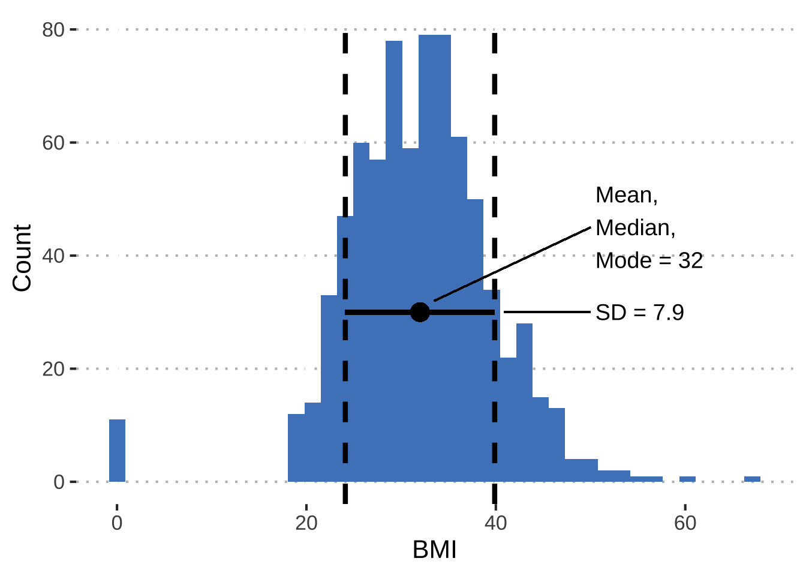
Describing Properties of our Data (Refined)
Skewness
The symmetry of the distribution
See Introduction 4.3 for more information about these values
dataset |>
select(Glucose, Insulin, BMI, SkinThickness) |>
describe() |>
select(described_variables, skewness) |>
formattable()| described_variables | skewness |
|---|---|
| Glucose | 0.17 |
| Insulin | 2.27 |
| BMI | -0.43 |
| SkinThickness | 0.11 |
Note that we will remove the other percentiles to produce a cleaner output
describes_variables: name of the column being describedskewness: skewness
Testing Normality (Accelerated)
Q-Q plots
Testing overall normality of two columns
Testing normality of groups
Note that you can also use normality() to run Shapiro-Wilk tests, but since this test is not viable at N < 20, I recommend Q-Q plots.
Q-Q Plots
Plots of the quartiles of a target data set against the predicted quartiles from a normal distribution.
Notably, plot_normality() will show you the logaritmic and skewed transformations (more below)
dataset |>
plot_normality(Glucose, Insulin, Age)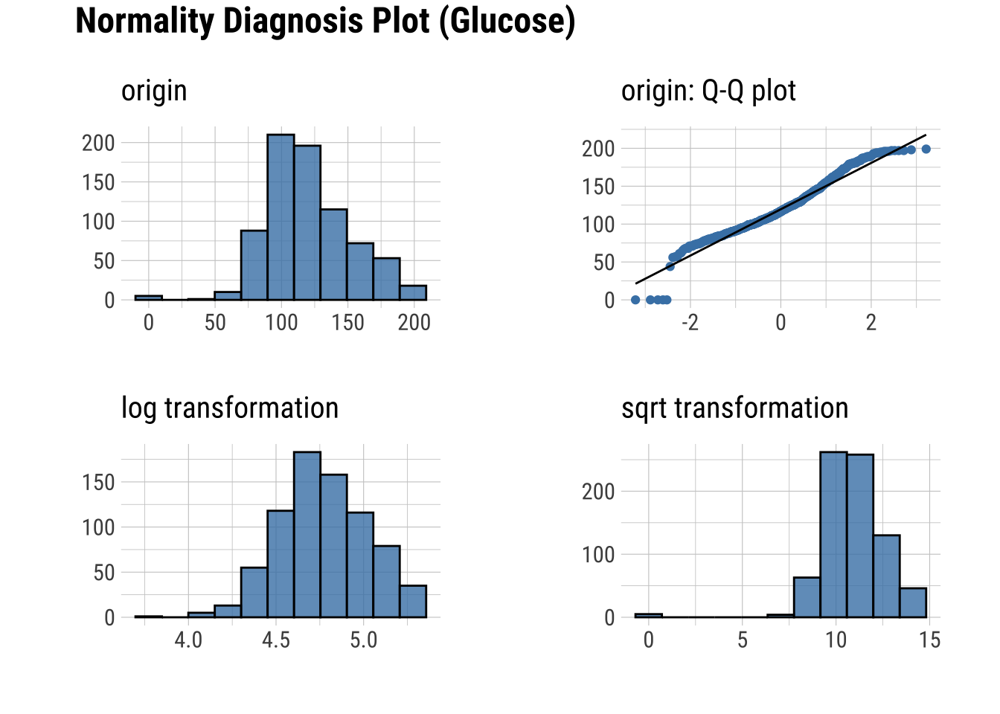
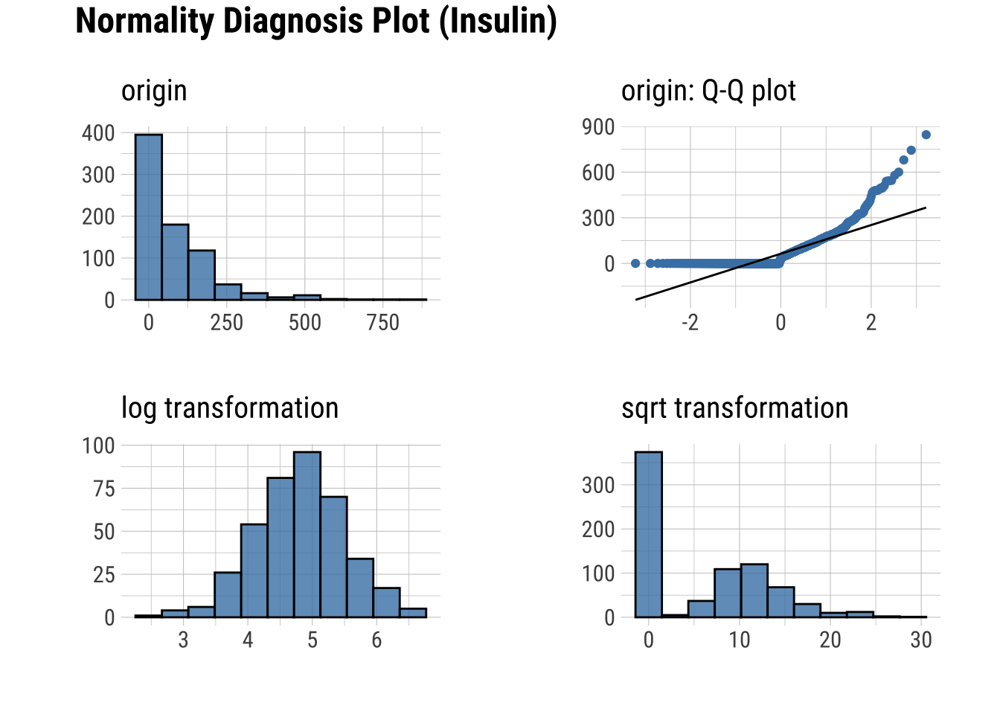
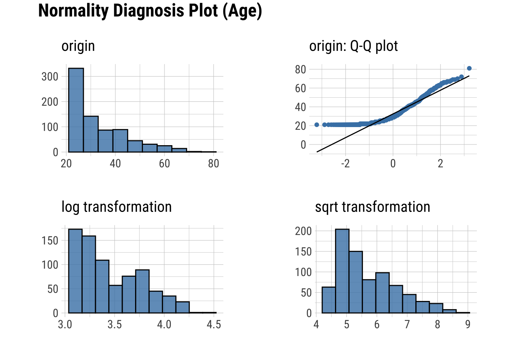
Normality within Groups
Looking within Age_group at the subgroup normality
Q-Q Plots
dataset %>%
group_by(Age_group) %>%
select(Glucose, Insulin) %>%
plot_normality()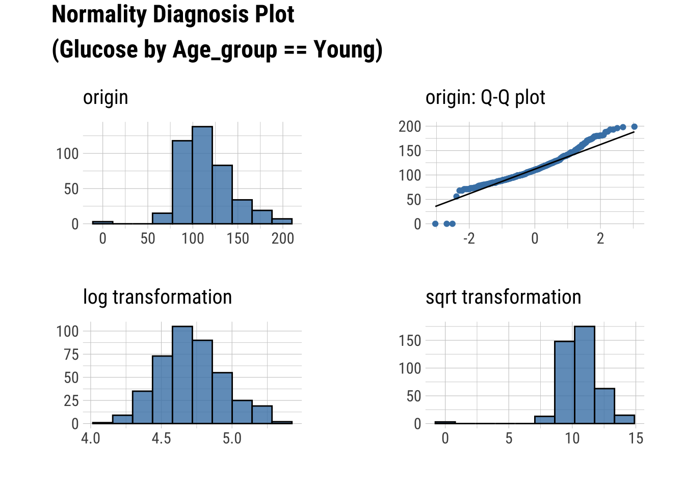
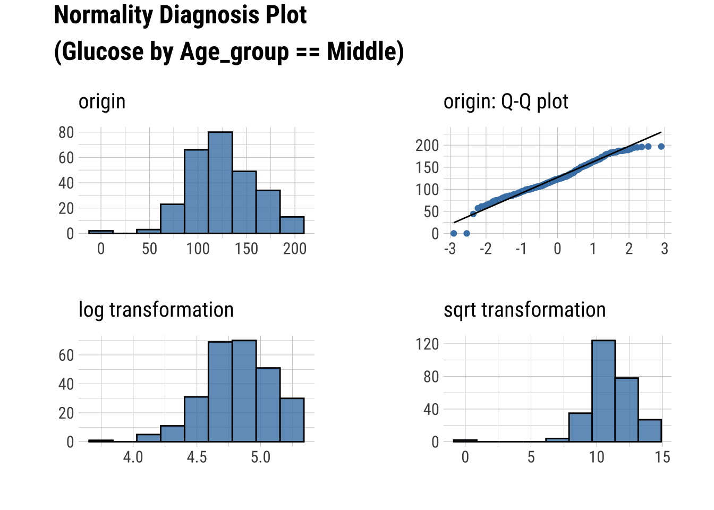
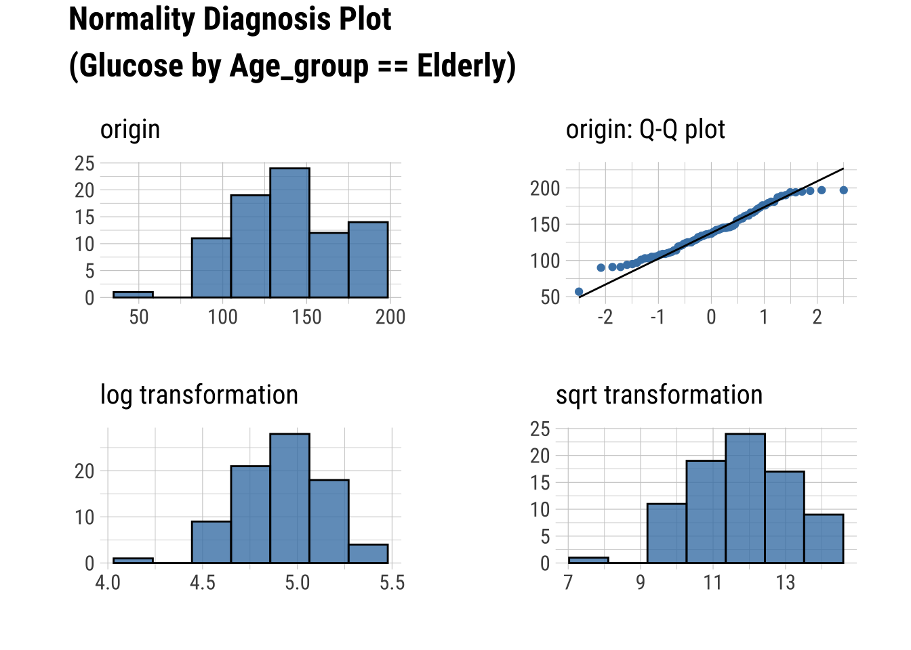
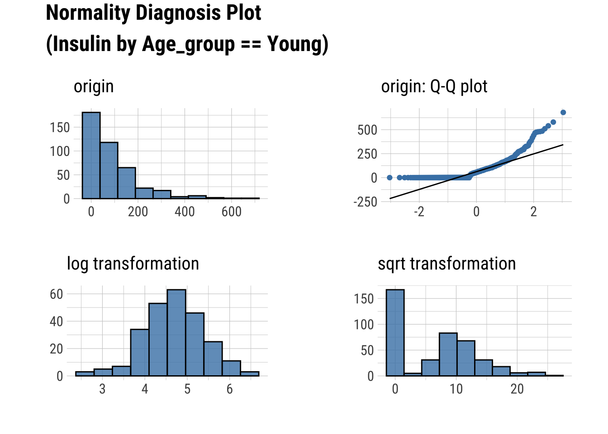
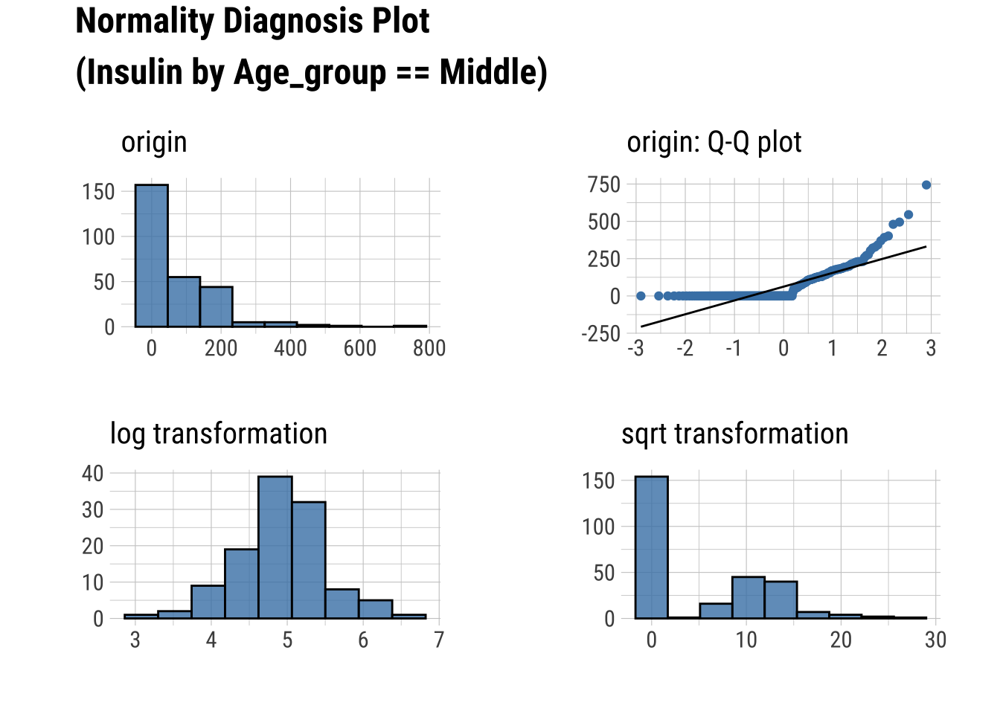
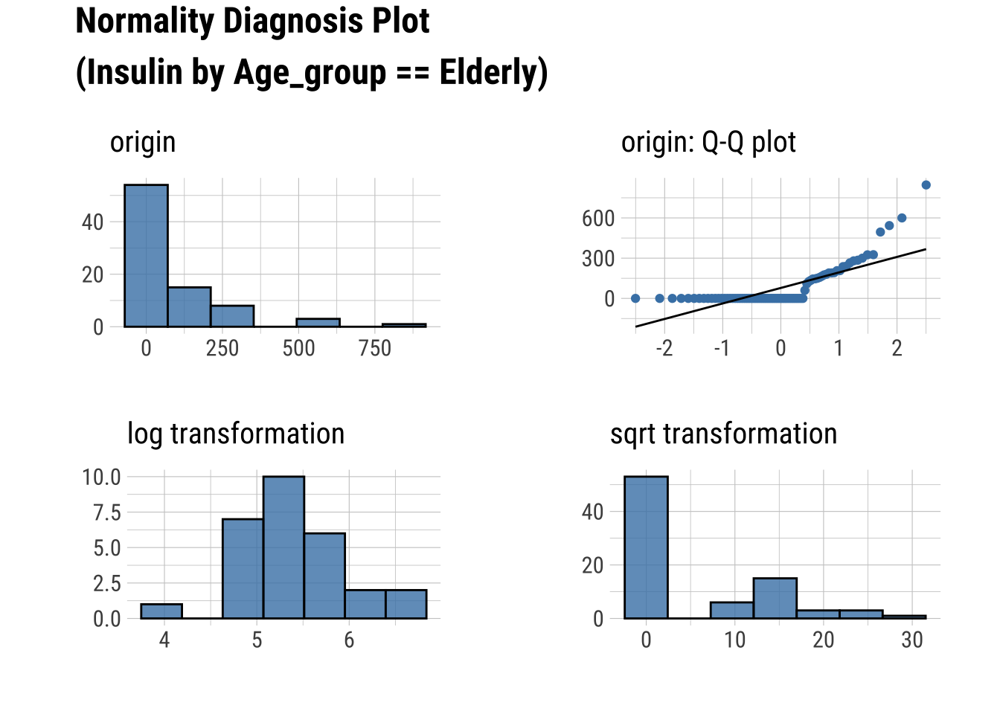
Transforming Data
Your data could be more easily interpreted with a transformation, since not all relationships in nature follow a linear relationship - i.e., many biological phenomena follow a power law (or logarithmic curve), where they do not scale linearly.
We will try to transform the Insulin column with through several approaches and discuss the pros and cons of each. First however, we will remove 0 values, because Insulin values are impossible…
InsMod <- dataset |>
filter(Insulin > 0)Square-root, Cube-root, and Logarithmic Transformations
Resolving Skewness using transform().
“sqrt”: square-root transformation. \(\sqrt x\) (moderate skew)
“log”: log transformation. \(log(x)\) (greater skew)
“log+1”: log transformation. \(log(x + 1)\). Used for values that contain 0.
“1/x”: inverse transformation. \(1/x\) (severe skew)
“x^2”: squared transformation. \(x^2\)
“x^3”: cubed transformation. \(x^3\)
We will compare the sqrt, log+1, 1/x (inverse), x^2, and x^3 transformations. Note that you would have to add a constant to use the log transformation, so it is easier to use the log+1 instead. You however need to add a constant to both the sqrt and 1/x transformations because they don’t include zeros and will otherwise skew the results. Here we removed zeros a priori.
Square-root Transformation
sqrtIns <- transform(InsMod$Insulin, method = "sqrt")
summary(sqrtIns)* Resolving Skewness with sqrt
* Information of Transformation (before vs after)
Original Transformation
n 394.0 394.00
na 0.0 0.00
mean 155.5 11.75
sd 118.8 4.17
se_mean 6.0 0.21
IQR 113.8 5.05
skewness 2.2 1.01
kurtosis 6.4 1.46
p00 14.0 3.74
p01 18.0 4.24
p05 41.7 6.45
p10 50.3 7.09
p20 69.2 8.32
p25 76.2 8.73
p30 87.9 9.38
p40 105.0 10.25
p50 125.0 11.18
p60 145.8 12.07
p70 176.0 13.27
p75 190.0 13.78
p80 210.0 14.49
p90 292.4 17.10
p95 395.5 19.89
p99 580.5 24.09
p100 846.0 29.09sqrtIns |>
plot()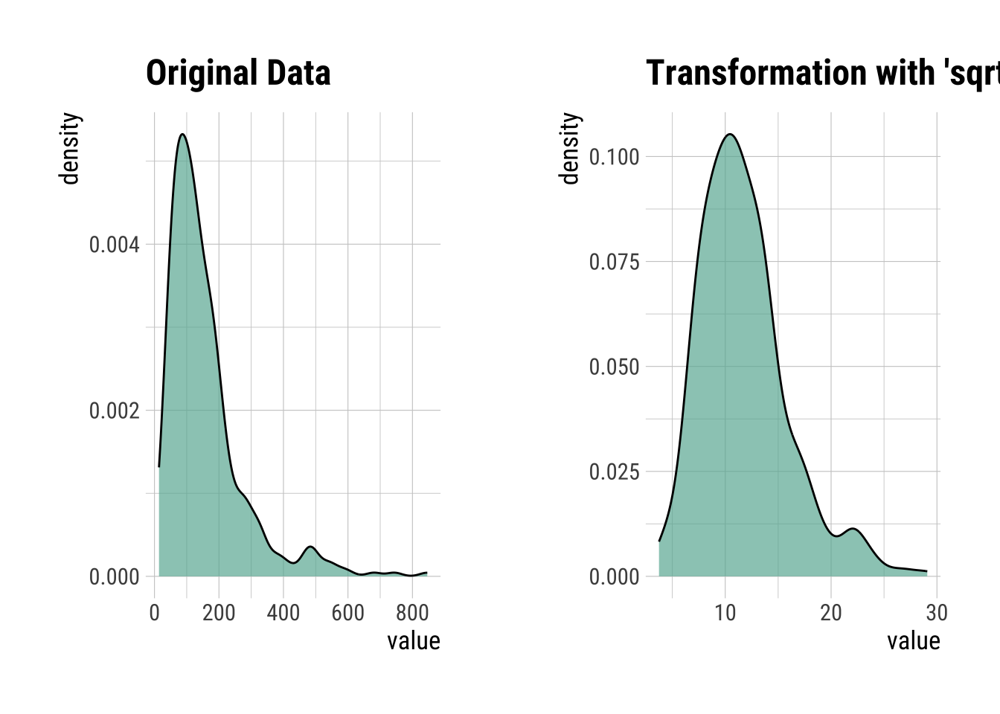
Logarithmic (+1) Transformation
Log1Ins <- transform(InsMod$Insulin, method = "log+1")
summary(Log1Ins)* Resolving Skewness with log+1
* Information of Transformation (before vs after)
Original Transformation
n 394.0 394.000
na 0.0 0.000
mean 155.5 4.818
sd 118.8 0.691
se_mean 6.0 0.035
IQR 113.8 0.905
skewness 2.2 -0.088
kurtosis 6.4 0.237
p00 14.0 2.708
p01 18.0 2.944
p05 41.7 3.753
p10 50.3 3.938
p20 69.2 4.251
p25 76.2 4.347
p30 87.9 4.488
p40 105.0 4.663
p50 125.0 4.836
p60 145.8 4.989
p70 176.0 5.176
p75 190.0 5.252
p80 210.0 5.352
p90 292.4 5.682
p95 395.5 5.983
p99 580.5 6.366
p100 846.0 6.742Log1Ins |>
plot()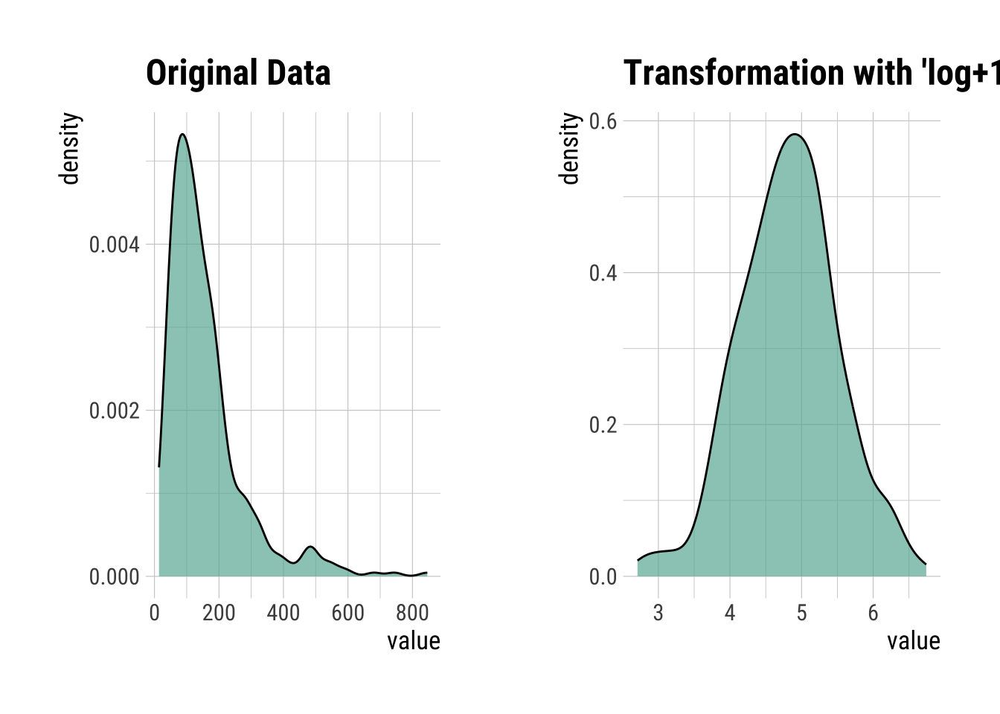
Inverse Transformation
InvIns <- transform(InsMod$Insulin, method = "1/x")
summary(InvIns)* Resolving Skewness with 1/x
* Information of Transformation (before vs after)
Original Transformation
n 394.0 3.9e+02
na 0.0 0.0e+00
mean 155.5 1.1e-02
sd 118.8 9.0e-03
se_mean 6.0 4.6e-04
IQR 113.8 7.9e-03
skewness 2.2 3.2e+00
kurtosis 6.4 1.5e+01
p00 14.0 1.2e-03
p01 18.0 1.7e-03
p05 41.7 2.5e-03
p10 50.3 3.4e-03
p20 69.2 4.8e-03
p25 76.2 5.3e-03
p30 87.9 5.7e-03
p40 105.0 6.9e-03
p50 125.0 8.0e-03
p60 145.8 9.5e-03
p70 176.0 1.1e-02
p75 190.0 1.3e-02
p80 210.0 1.4e-02
p90 292.4 2.0e-02
p95 395.5 2.4e-02
p99 580.5 5.6e-02
p100 846.0 7.1e-02InvIns |>
plot()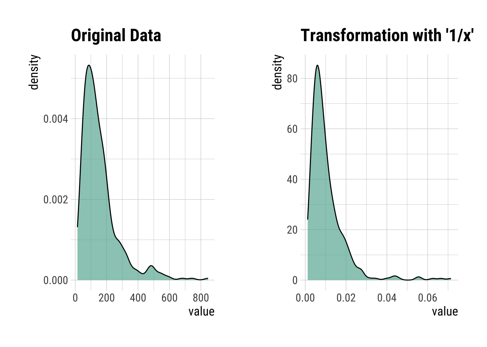
Squared Transformation
SqrdIns <- transform(InsMod$Insulin, method = "x^2")
summary(SqrdIns)* Resolving Skewness with x^2
* Information of Transformation (before vs after)
Original Transformation
n 394.0 3.9e+02
na 0.0 0.0e+00
mean 155.5 3.8e+04
sd 118.8 7.2e+04
se_mean 6.0 3.7e+03
IQR 113.8 3.0e+04
skewness 2.2 4.8e+00
kurtosis 6.4 3.1e+01
p00 14.0 2.0e+02
p01 18.0 3.2e+02
p05 41.7 1.7e+03
p10 50.3 2.5e+03
p20 69.2 4.8e+03
p25 76.2 5.8e+03
p30 87.9 7.7e+03
p40 105.0 1.1e+04
p50 125.0 1.6e+04
p60 145.8 2.1e+04
p70 176.0 3.1e+04
p75 190.0 3.6e+04
p80 210.0 4.4e+04
p90 292.4 8.5e+04
p95 395.5 1.6e+05
p99 580.5 3.4e+05
p100 846.0 7.2e+05SqrdIns |>
plot()
Cubed Transformation
CubeIns <- transform(InsMod$Insulin, method = "x^3")
summary(CubeIns)* Resolving Skewness with x^3
* Information of Transformation (before vs after)
Original Transformation
n 394.0 3.9e+02
na 0.0 0.0e+00
mean 155.5 1.4e+07
sd 118.8 4.8e+07
se_mean 6.0 2.4e+06
IQR 113.8 6.4e+06
skewness 2.2 7.7e+00
kurtosis 6.4 7.7e+01
p00 14.0 2.7e+03
p01 18.0 5.8e+03
p05 41.7 7.2e+04
p10 50.3 1.3e+05
p20 69.2 3.3e+05
p25 76.2 4.4e+05
p30 87.9 6.8e+05
p40 105.0 1.2e+06
p50 125.0 2.0e+06
p60 145.8 3.1e+06
p70 176.0 5.5e+06
p75 190.0 6.9e+06
p80 210.0 9.3e+06
p90 292.4 2.5e+07
p95 395.5 6.2e+07
p99 580.5 2.0e+08
p100 846.0 6.1e+08CubeIns |>
plot()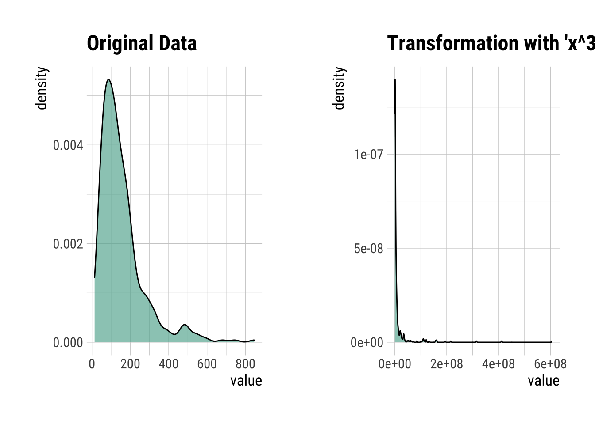
Box-cox Transformation
There are several transformations, each with it’s own “criteria”, and they don’t always fix extremely skewed data. Instead, you can just choose the Box-Cox transformation which searches for the the best lambda value that maximizes the log-likelihood (basically, what power transformation is best). The benefit is that you should have normally distributed data after, but the power relationship might be pretty abstract (i.e., what would a transformation of x^0.12 be interpreted as in your system?..)
BoxCoxIns <- transform(InsMod$Insulin, method = "Box-Cox")
summary(BoxCoxIns)* Resolving Skewness with Box-Cox
* Information of Transformation (before vs after)
Original Transformation
n 394.0 394.000
na 0.0 0.000
mean 155.5 3.011
sd 118.8 0.262
se_mean 6.0 0.013
IQR 113.8 0.335
skewness 2.2 -0.630
kurtosis 6.4 1.003
p00 14.0 2.027
p01 18.0 2.168
p05 41.7 2.588
p10 50.3 2.673
p20 69.2 2.808
p25 76.2 2.848
p30 87.9 2.904
p40 105.0 2.973
p50 125.0 3.037
p60 145.8 3.092
p70 176.0 3.157
p75 190.0 3.183
p80 210.0 3.216
p90 292.4 3.320
p95 395.5 3.409
p99 580.5 3.515
p100 846.0 3.610BoxCoxIns |>
plot()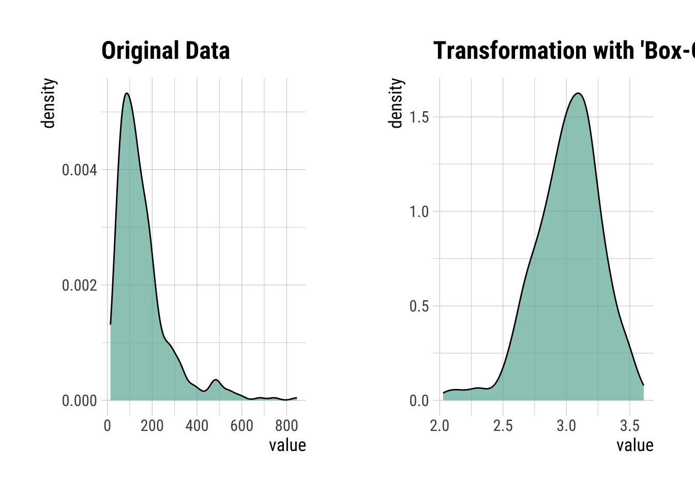
Produce an HTML Transformation Summary
transformation_web_report(dataset)